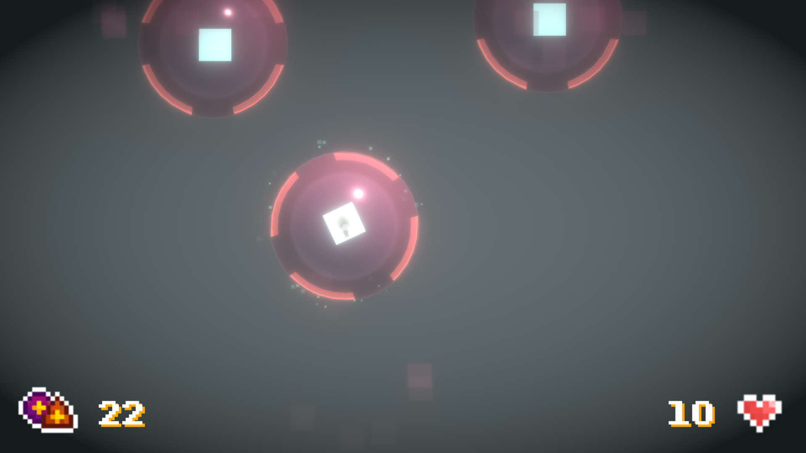

Cellulose
|
 |
Entry to the Open Alpha Open Game Jam 2022 with the theme requirement: "Mini." Awarded "Best Sound," "Best Design," and "Best Mechanics." In the game, you play as Viri the virus. You can infect cells by entering their nuclei to take control of them to destroy other cells. The objective is to destroy as many cells as you can and survive as long as you can.